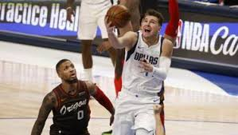

Lukaku porta l'Inter in vetta alla classifica
Con il 3-1 alla Lazio e la doppietta di Lukaku, l'Inter si porta in cima alla classifica. Superato il Milan, domenica prossima si attende un derby infuocato
Australian Open
Nadal schianta Fognini 3-0 e vola ai quarti di finale
Continua a leggereNBA
Cadono i Lakers e Milwaukee, Portland sbanca Dallas. Un super Doncic non basta ai Mavs
Continua a leggere... CONOSCIAMOCI MEGLIO...
Ciao ragazzi! Siamo Marco Taormina(21), Sara Labbruzzo(22), Assunta Insinga(24). Frequentiamo tutti e tre l'Università di Palermo, precisamente siamo studenti di storia e filosofia. La passione per lo sport, che accomuna tutti e tre, c'ha portato a creare Bar Sport 2,0, un posto dove lo sport domina a 360 gradi. La presenza di due donne potrebbe destare sorpresa, pero' vi possiamo assicurare che anche in questo ambito c'è moltissima competenza, segnale di una tendenza che cerca di abbattere i soliti luoghi comuni dello sport come ambito prevalentemente maschile. Detto questo, vi auguriamo una buona permanenza e una buona navigazione su Bar Sport 2,0!